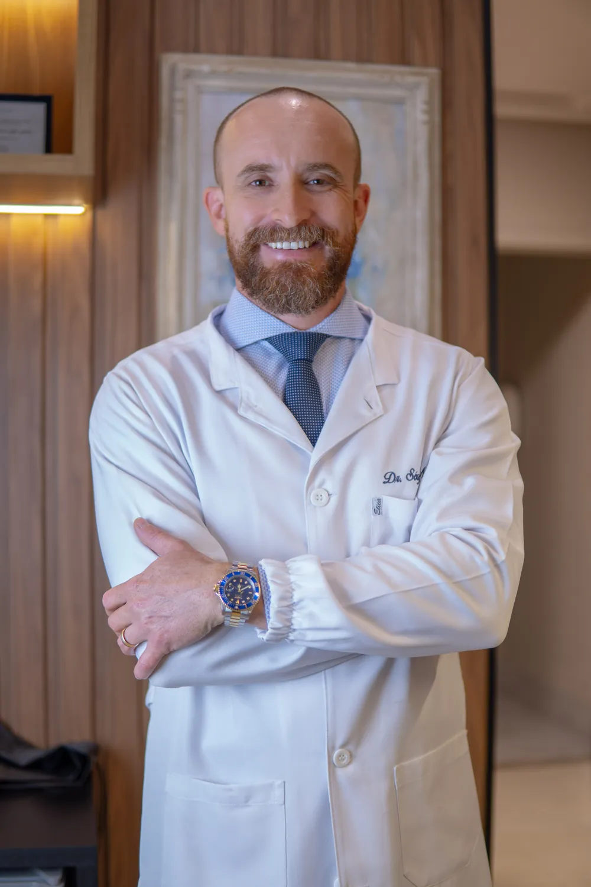
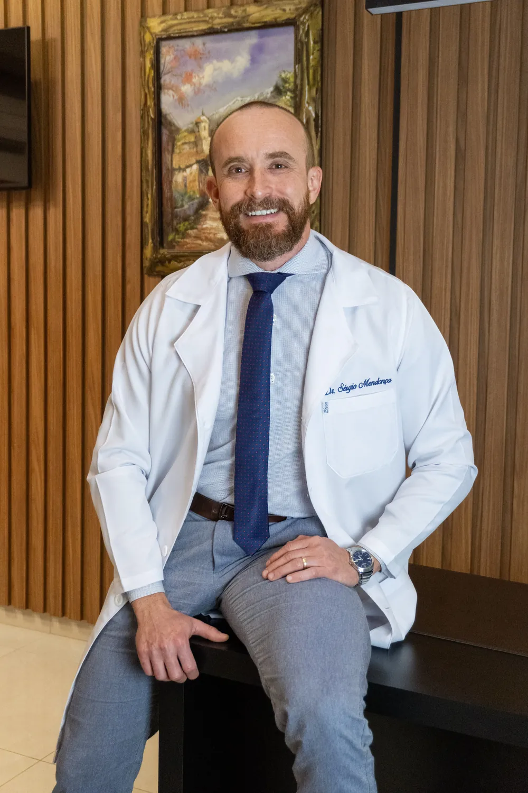
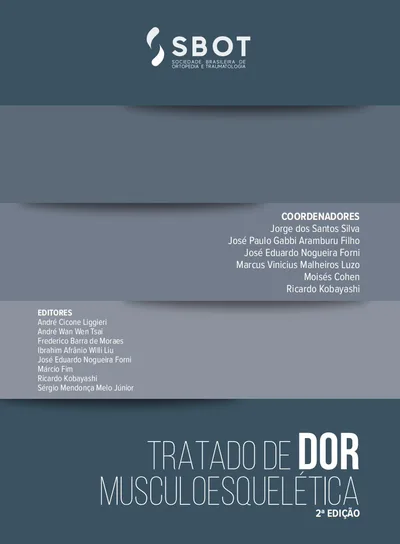
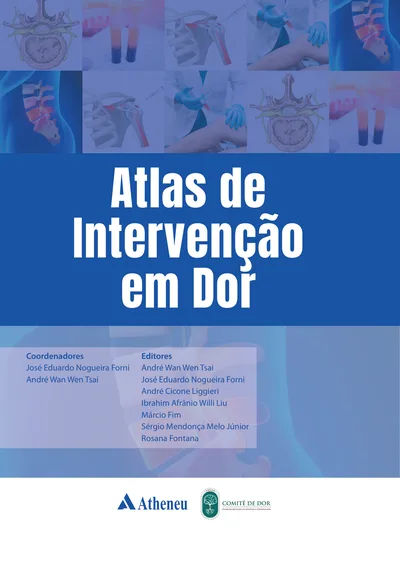
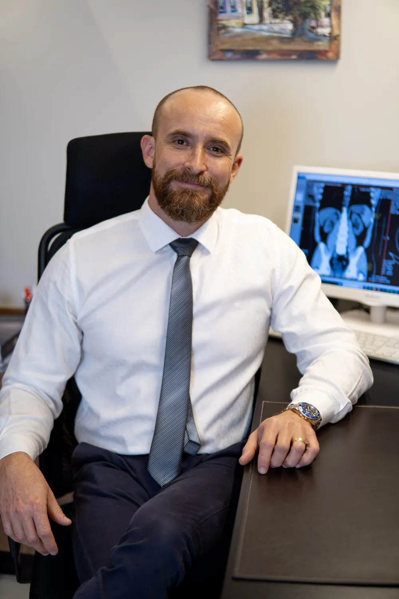
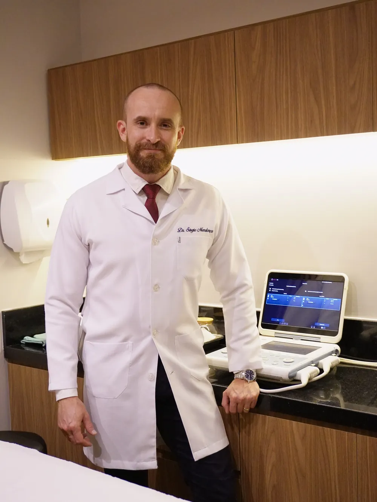
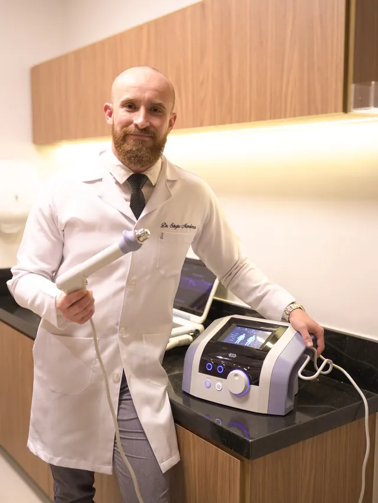
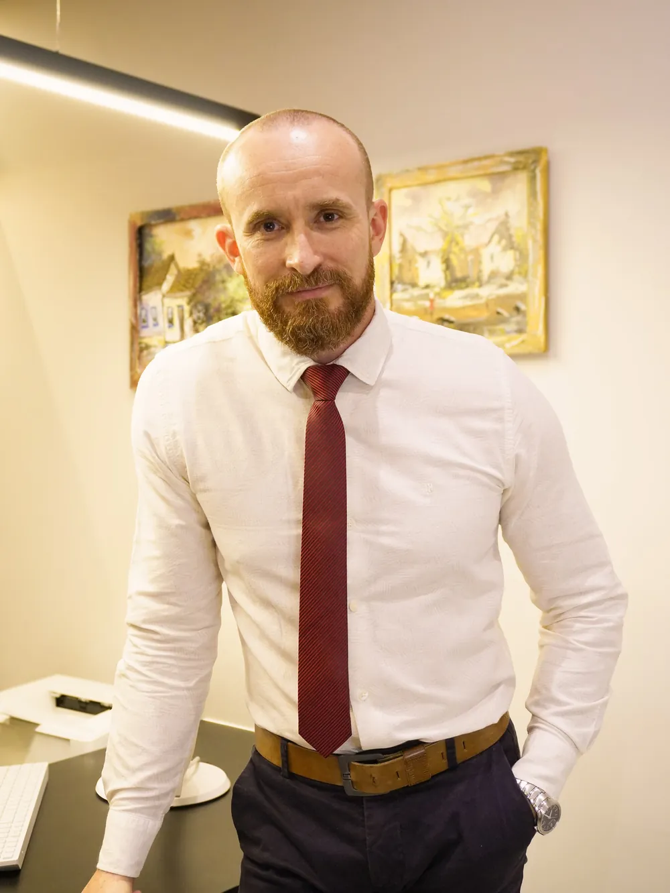

Investiga a origem da dor
A dor pode vir da articulação, do músculo, do tendão ou dos nervos. Identificar a origem orienta o tratamento mais adequado para cada caso.
Ortopedista com área de atuação em Dor
O Dr. Sérgio Mendonça investiga a origem da sua dor e, quando indicado, realiza procedimentos guiados por ultrassom no próprio consultório, em Morrinhos – GO.
Sente dor no joelho?dor no ombro?dor na coluna?dor no quadril?dor que não passa?
Clínica CURE · Setor Central, Morrinhos – GO


Sobre o médico
O Dr. Sérgio Mendonça Melo Júnior é médico formado pela Universidade Federal de Uberlândia (UFU), com residência em Ortopedia e Traumatologia no Hospital Ortopédico de Goiânia e Membro Titular da Sociedade Brasileira de Ortopedia e Traumatologia (SBOT).
Além da Ortopedia, tem área de atuação em Dor, com título pela Associação Médica Brasileira, e formação em ultrassonografia musculoesquelética. Assim, une o diagnóstico ortopédico ao tratamento específico da dor, incluindo procedimentos guiados por imagem.
“Te ajudo a viver sem dor.”
O diferencial
Todo ortopedista lida com dor no dia a dia. A área de atuação em Dor é uma formação adicional, com título pela Associação Médica Brasileira e registro no CRM (RQE 14414), dedicada a investigar e tratar a dor de forma específica.
A dor pode vir da articulação, do músculo, do tendão ou dos nervos. Identificar a origem orienta o tratamento mais adequado para cada caso.
Com o ultrassom, o médico visualiza a estrutura em tempo real durante infiltrações e bloqueios, o que aumenta a precisão do procedimento.
Combina medicamentos, procedimentos e orientações de reabilitação conforme a necessidade de cada paciente.


Produção científica
O Dr. Sérgio participa da formação de outros ortopedistas no Brasil como editor de livros, autor de guias da SBOT e palestrante nos principais congressos da especialidade.
Palestrante no Congresso Brasileiro de Ortopedia e Traumatologia (SBOT), no Pain Brazil – Congresso Internacional Multidisciplinar de Dor, no CINDOR-USP e no Congresso da ABDOR. Coautor de artigo na Revista Brasileira de Ortopedia (2025).
Fonte: Currículo Lattes (CNPq), atualizado em 15/10/2026.
Áreas de atuação

Avaliação de condições que afetam ossos, articulações, músculos, tendões e ligamentos. Dor, desconforto ou limitação de movimento podem ter diferentes causas e são avaliados de acordo com o histórico de cada pessoa.

Avaliação e tratamento de quadros dolorosos, incluindo dores persistentes ou recorrentes que interferem nas atividades diárias. A consulta busca a causa da dor e discute as opções de cuidado adequadas a cada caso.
Onde está a sua dor?
Dor ao subir escadas, agachar ou após atividade física pode ter diferentes causas, como artrose, lesões de menisco ou tendinites. A avaliação identifica a origem e orienta o tratamento, que pode incluir procedimentos guiados por ultrassom.
Procedimentos e tratamentos
A indicação de qualquer procedimento depende da avaliação médica individual.
Em destaque
Infiltrações e bloqueios feitos com o ultrassom, que mostra em tempo real a agulha e a estrutura tratada, seja articulação, tendão, bursa ou nervo. Isso traz mais precisão à aplicação.

Ondas acústicas aplicadas na região dolorida, usadas em tendinites, fascite plantar e outras dores musculoesqueléticas, conforme indicação.
Uso orientado de medicamentos e estratégias combinadas (tratamento multimodal), inclusive para a dor neuropática.
Avaliação e acompanhamento da osteoporose e do metabolismo ósseo, para prevenir fraturas por fragilidade.
Técnica minimamente invasiva que atua sobre os nervos responsáveis pela dor, em casos selecionados de dor crônica.
Aplicação de ácido hialurônico na articulação, usada em alguns casos de artrose, especialmente no joelho.
Opções de tratamento regenerativo discutidas caso a caso, conforme as evidências e as normas do Conselho Federal de Medicina.
Quando procurar avaliação?
Uma avaliação médica ajuda a investigar possíveis causas e orientar os próximos passos. Alguns sinais de que vale a pena conversar com a equipe:
Onde estamos
Dúvidas frequentes
É uma qualificação reconhecida pela Associação Médica Brasileira e registrada no CRM, voltada ao diagnóstico e ao tratamento da dor. O Dr. Sérgio é ortopedista (RQE 11190) com área de atuação em Dor (RQE 14414).
São infiltrações e bloqueios em que o médico acompanha a agulha pela imagem do ultrassom, em tempo real, até a estrutura que será tratada. A indicação é definida na consulta.
Dores e condições ortopédicas como dor no joelho, ombro, quadril, coluna, tornozelo e mão, artrose, tendinites, osteoporose e dores persistentes. Fale com a equipe para confirmar se a sua queixa se enquadra no atendimento.
Clique em qualquer botão de WhatsApp para falar com a equipe e receber informações sobre disponibilidade e agendamento.
Na Clínica CURE, Avenida Dante Costa, nº 85, Quadra 03, Lote 03, Setor Central, Morrinhos – GO. Use o botão “Como chegar” para traçar sua rota.
Informação em confirmação com a equipe. Entre em contato pelo WhatsApp para saber sobre atendimento particular, convênios e formas de pagamento.
Os horários serão confirmados pela equipe. Fale pelo WhatsApp para verificar a disponibilidade.
Fale com a equipe do Dr. Sérgio Mendonça para tirar dúvidas sobre o atendimento e agendar sua consulta.
